本文件（包括任何附件）包含炬識科技股份有限公司專屬或機密資訊，僅提供於特定目的之收件者。非本文件指定之收件者，無權閱讀、列印、保留、儲存、複製或散播本訊息或其他任何部分。
This document and any attachments transmitted with it may contain privileged or confidential information of Athemaster Co., LTD (“Athemaster”), and intended solely for the use of the individual or entity to whom they are addressed. Any disclosure, reproduction, distribution or other use of this message or any attachments by an individual or entity other than the intended recipient is prohibited.
一起動手用 Spark
處理 AML 場景下的億級資料
黃俊鈞 (C.C. Huang)
關於我
黃俊鈞 (C.C. Huang)
- 曾參與及帶領 10 人團隊完成電子公文交換系統開發建置
- 於林口智慧城市大數據案，設計開發戰情室看板所使用之彙整資料 API
- 對於分散式系統亦有研究，論文以
分散式系統之高可用性、資料一致性
作為主軸，針對電力監控系統資料
缺漏問題，提出解決方法

Design Data-Intensive Applications

反洗錢系統資料管線案
故事的背景
顧客行銷的資料特性
反洗錢系統的資料特性
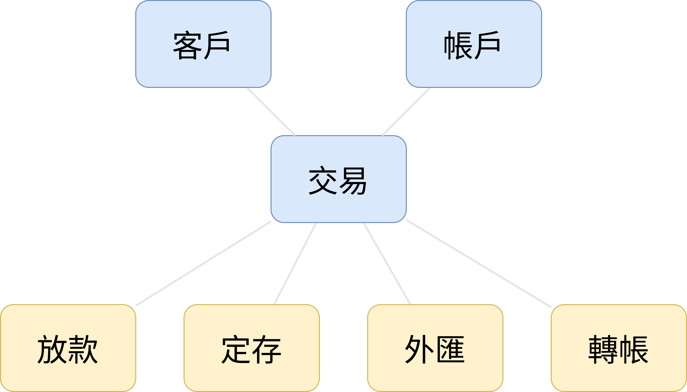反洗錢系統的資料管線
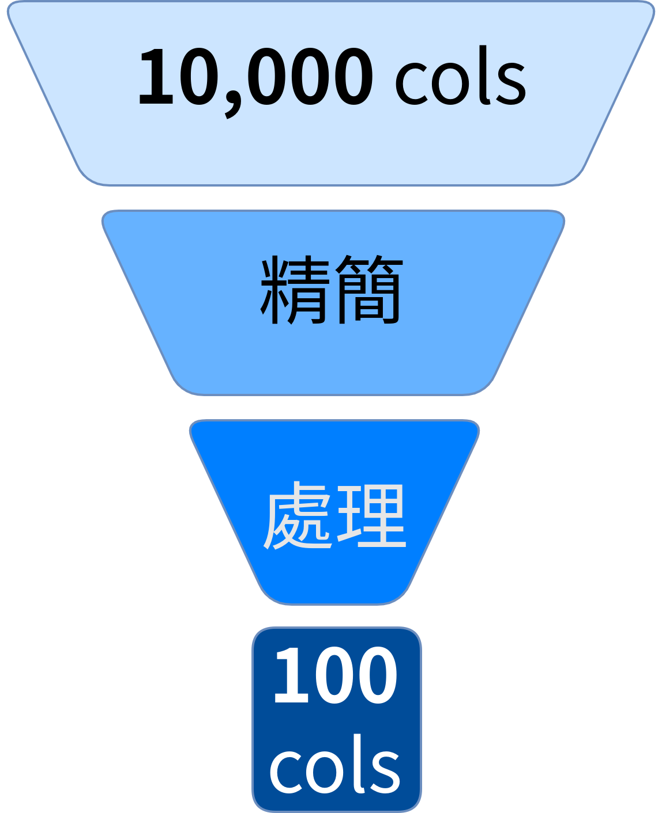鬼鴞說資料
EP 2 | 在金融業百人編制的資料專案，
會發生什麼匪夷所思的事？
原來做資料專案也有祕訣？
管線架構簡述
管線架構簡述
第一：下檔
管線架構簡述
第二：精簡欄位
- 透過 Spark SQL 選取
必須的欄位 - 最後大約 100 ~ 200 個
欄位
管線架構簡述
第三：實作邏輯
- 透過 Spark SQL 組織
業務邏輯 - 包含 30 多個 UDF
- 形成 30 多張暫存表
管線架構簡述
第四：組合成品
- 透過 SparkSQL 將
資料表 Union 起來 - 最後輸出 6 張資料表
Spark & CDP 的成功關鍵
資料儲存與運算處理的整合
傳統的應用程式架構
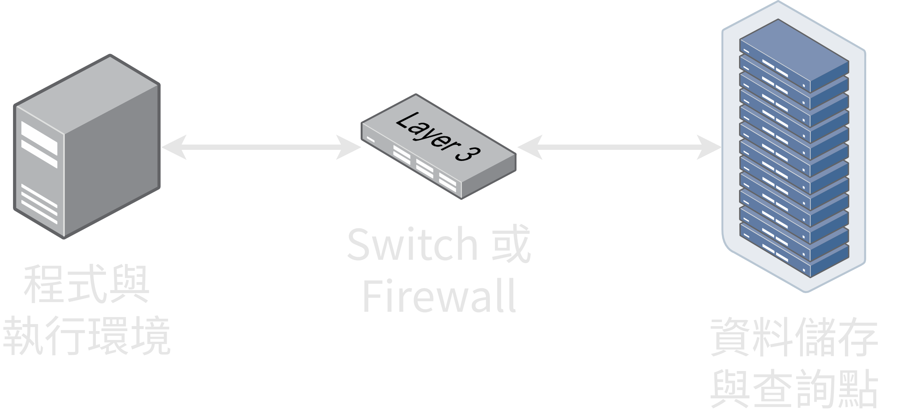CDP 與 Hadoop 生態系架構
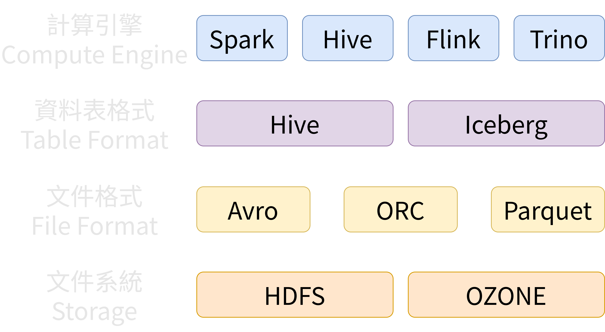造成瓶頸的網路
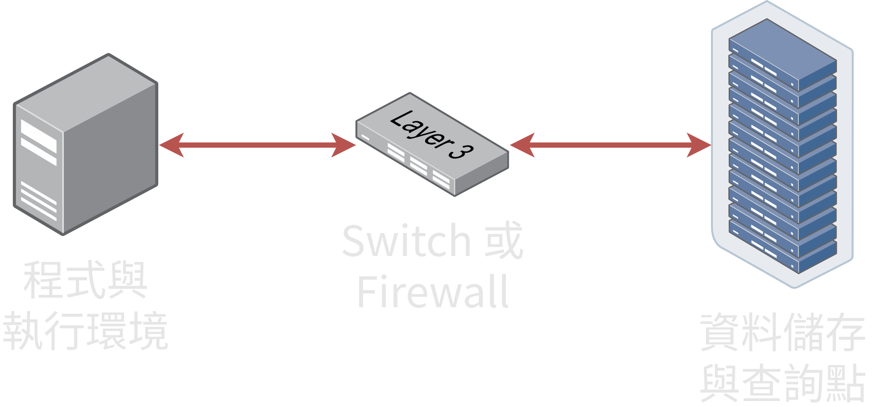叢集資源管理的支援性
單機思維
叢集思維
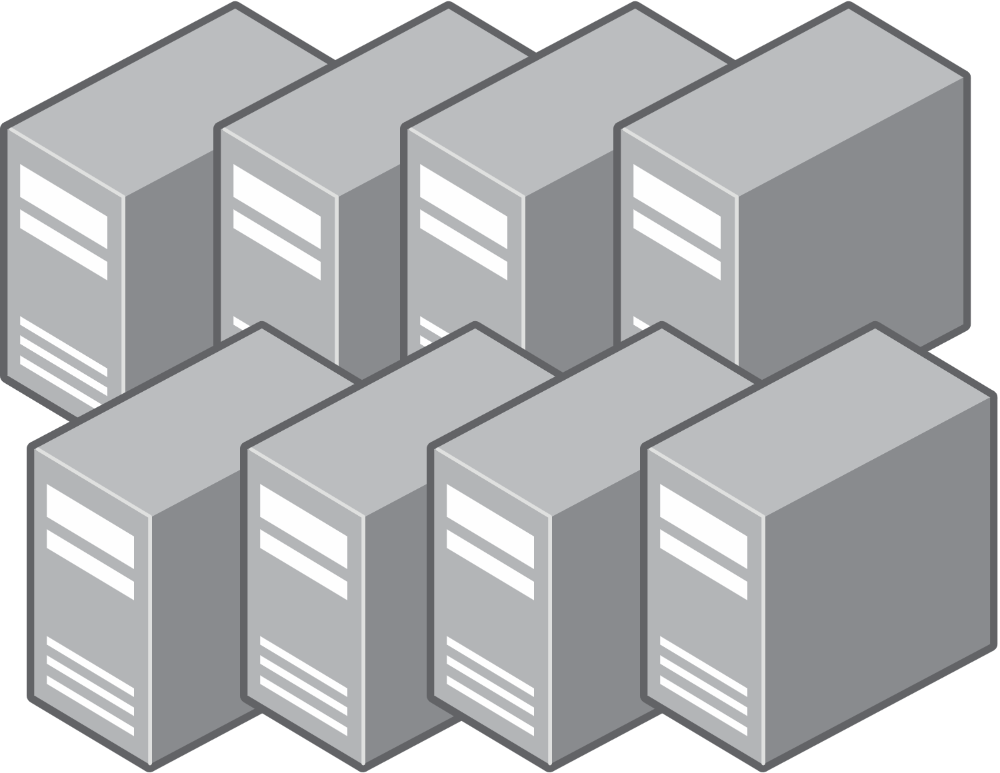單機
- Spark
- Pandas
- Polars
叢集
- Spark
- Dask
- 不支援
叢集支援比較
| Spark | Dask | |
|---|---|---|
| Pub Cloud | Yes | Yes |
| Standalone | Yes | Not Yet |
| K8s | Yes | Yes |
| Yarn | Yes | No |
高度相容性
CSV
Row-Based
Parquet
Column-Based
版本支援比較
| Spark | PyArrow | |
|---|---|---|
| Java 8 | Yes | NA |
| Python 3.6 | Yes | No |
| Python 3.8↑ | Yes | Yes |
開發靈活性
使用了 Spark，然後呢？
真的每次都跑全量的交易資料嗎？
出了問題怎樣排查？
實務現場經驗分享
Partition
df_result.write \
.mode("overwrite") \
.format("parquet") \
.partitionBy("txn_year_month") \
.option("partitionOverwriteMode", "dynamic") \
.save(f"{OUTPUT_PATH}")
追蹤 Spark 執行的日誌
- 即時紀錄：Yarn Application
- 歷史紀錄：Spark History Server
今天的範例程式
資料模型
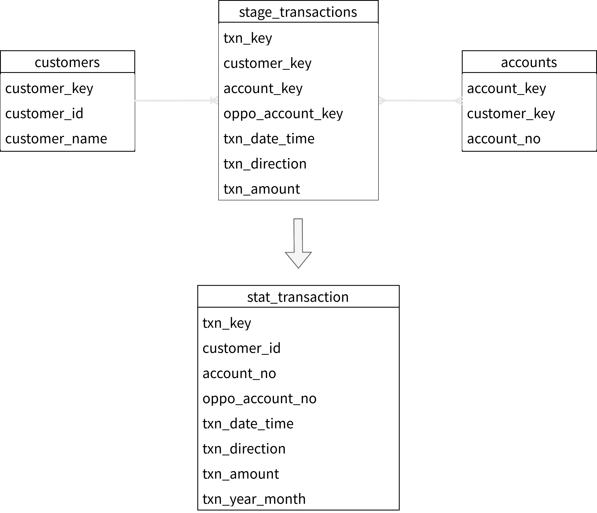程式位置
GitHub
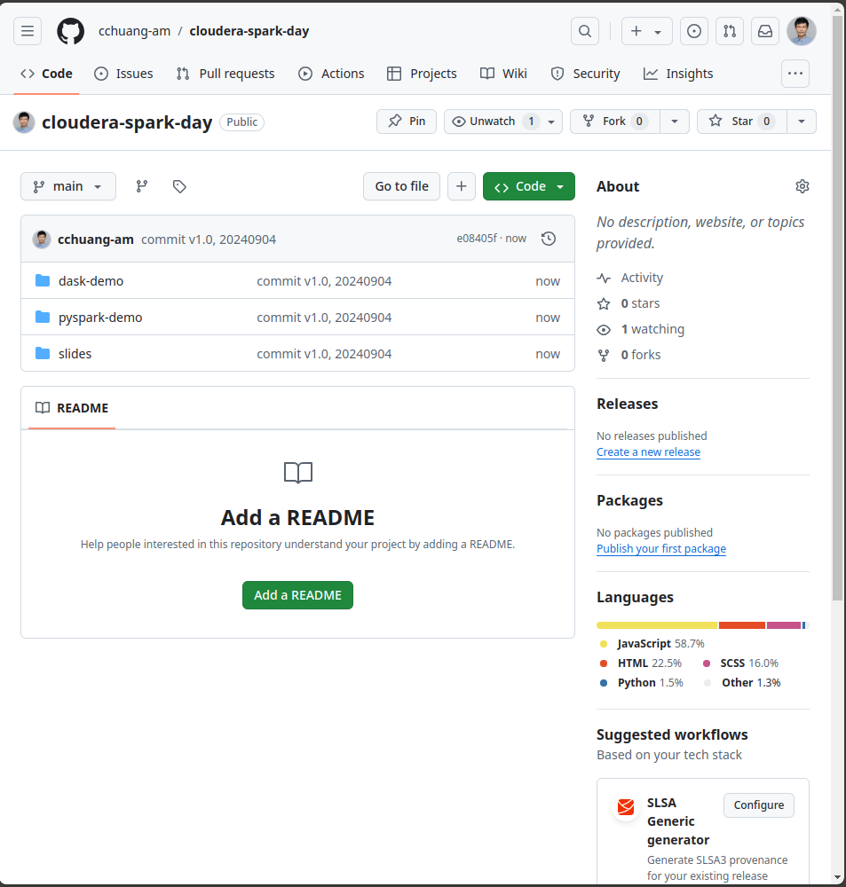QR Code
資料位置
Google Drive
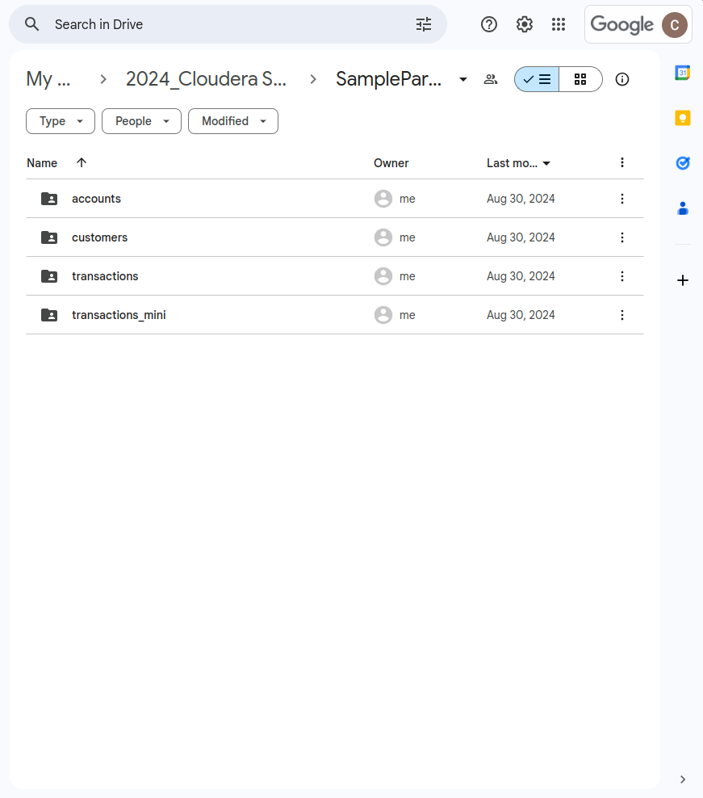QR Code
讀取 Parquet
Spark
def load_parquet(spark, path):
return spark.read.parquet(path)
Pandas/Dask
def load_parquet(path):
return pd.read_parquet(path)
PySpark 設定
config = SparkConf() \
.setAppName(core_service.get_app_name()) \
.set("spark.sql.parquet.enableVectorizedReader", "false")
PyArrow 在 Python 3.6 的錯誤訊息
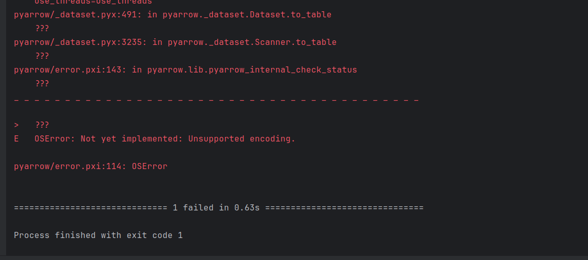調校 Spark 資源配置
Spark 叢集架構
 資料來源: https://spark.apache.org/docs/latest/cluster-overview.html
資料來源: https://spark.apache.org/docs/latest/cluster-overview.html
Spark 記憶體設定
- spark.driver.memory
- spark.executor.memory
Spark 核心數設定
- spark.driver.cores
- spark.executor.cores
Pandas 風格
Koalas
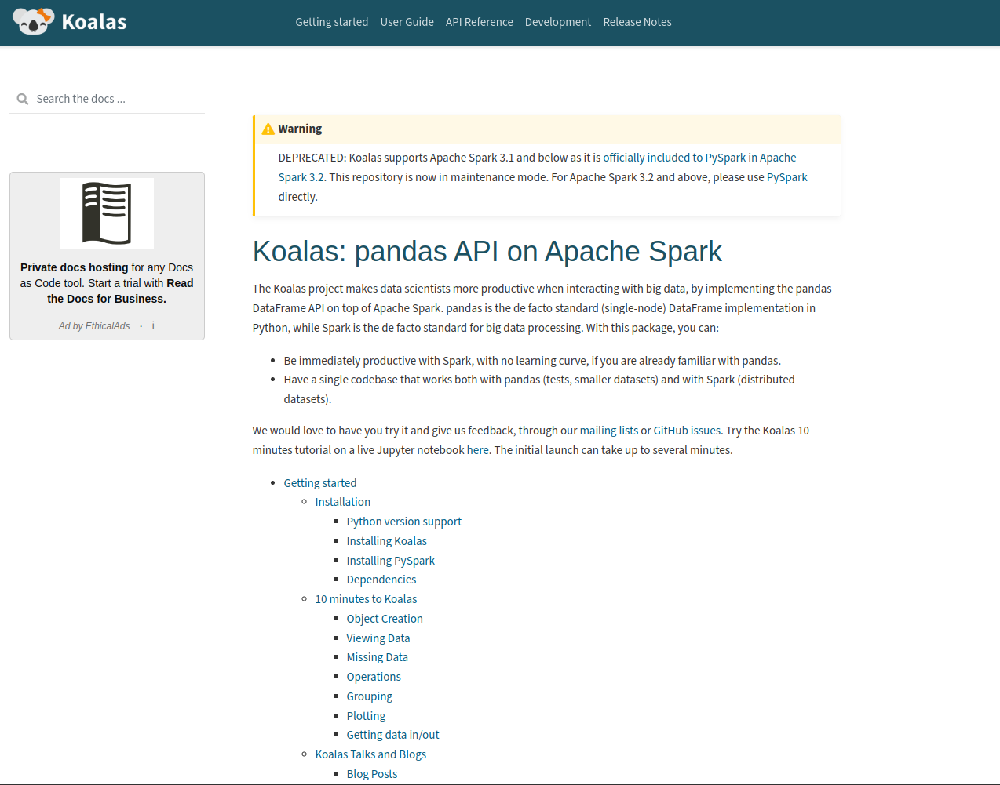PySpark 風格
df_result = df_transactions.alias("transactions") \
.join(df_customers.alias("customers"), on=["customer_key"], how="inner") \
.join(df_accounts.alias("accounts"), on=["account_key"], how="inner") \
.join(df_accounts.alias("oppo_accounts"),
f.col("transactions.oppo_account_key")==f.col("oppo_accounts.account_key"),
how="left") \
.select("transactions.txn_key",
"customers.customer_id",
"accounts.account_no",
f.col("oppo_accounts.account_no").alias("oppo_account_no"),
"transactions.txn_date_time",
"transactions.txn_direction",
"transactions.txn_amount") \
.withColumn("txn_year_month", f.date_format("transactions.txn_date_time", "yyyyMM"))
套用 Koalas
df_customers = df_customers.to_koalas()
df_accounts = df_accounts.to_koalas()
df_transactions = df_transactions.to_koalas()
df_oppo_accounts = df_accounts.rename(columns={
"account_key": "oppo_account_key",
"account_no": "oppo_account_no"})
df_result = ks.merge(df_transactions, df_customers, on="customer_key", how="inner")
df_result = ks.merge(df_result, df_accounts, on="account_key", how="inner")
df_result = ks.merge(df_result, df_oppo_accounts, on="oppo_account_key", how="left")
df_result = df_result[["txn_key", "customer_id", "account_no", "oppo_account_no",
"txn_date_time", "txn_direction", "txn_amount"]]
df_result["txn_year_month"] = df_result["txn_date_time"].dt.strftime("%Y%m")
return df_result.to_spark()
實際執行...
回饋小試
剛剛用 PySpark 寫的這個範例，與下面的 SQL 是否有相同作用？
aka. 可以直接跑在 Spark 上
SELECT
transactions.transaction_key,
customers.customer_id,
accounts.account_no,
oppo.account_no AS oppo_account_no,
transactions.txn_date_time,
transactions.txn_direction,
transactions.txn_amount,
date_format(transactions.txn_date_time, 'yyyyMM')
AS txn_year_month
FROM transactions
INNER JOIN customers
ON transactions.customer_key=customers.customer_key
INNER JOIN accounts
ON transactions.account_key=accounts.account_key
LEFT JOIN accounts AS oppo
ON transactions.oppo_account_key=oppo.account_key
今日回顧
- 反洗錢系統的資料特性
- CDP & Spark 的關鍵特性
- 現場實務分享
- 範例程式介紹
謝謝各位
本文件（包括任何附件）包含炬識科技股份有限公司專屬或機密資訊，僅提供於特定目的之收件者。非本文件指定之收件者，無權閱讀、列印、保留、儲存、複製或散播本訊息或其他任何部分。
This document and any attachments transmitted with it may contain privileged or confidential information of Athemaster Co., LTD (“Athemaster”), and intended solely for the use of the individual or entity to whom they are addressed. Any disclosure, reproduction, distribution or other use of this message or any attachments by an individual or entity other than the intended recipient is prohibited.